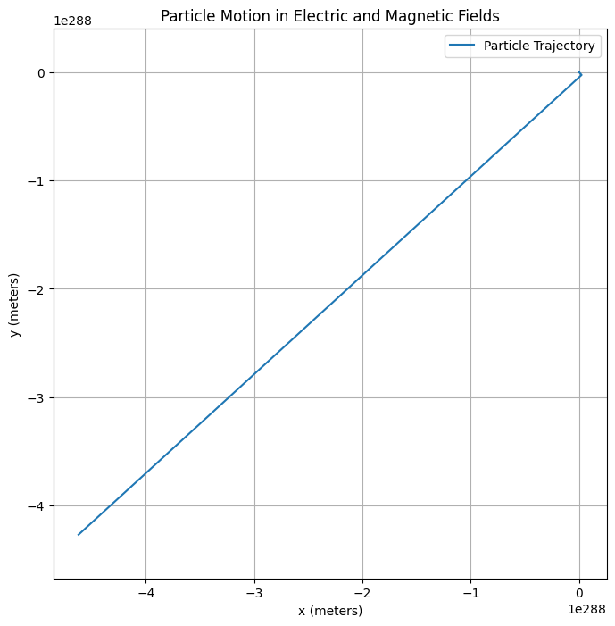
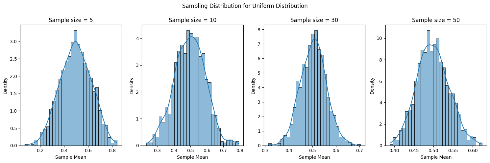
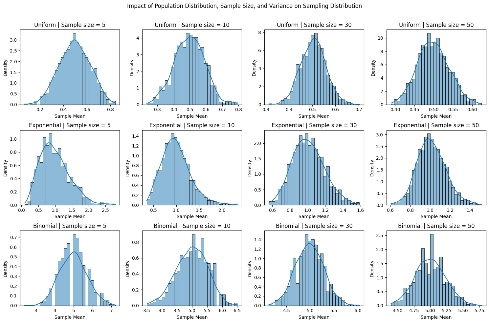
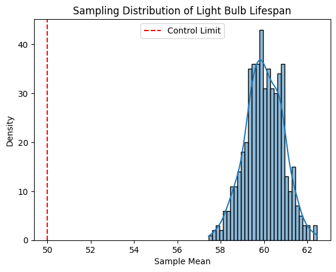

Problem 1
Simulating Sampling Distributions
Overview
In this task, we will simulate sampling distributions from various population distributions. The goal is to observe how the sampling distribution of the sample mean behaves as the sample size increases, which illustrates the Central Limit Theorem (CLT). We will work with three types of population distributions:
- Uniform distribution
- Exponential distribution
- Binomial distribution
Setup
The steps are as follows:
- Generate population data from each distribution.
- Take random samples from the population and compute the sample mean.
- Repeat the sampling process many times to build the sampling distribution of the mean.
- Visualize the results using histograms and probability density functions (PDFs).

TASK 2
Sampling and Visualization
Overview
In this task, we will randomly sample data from a population and calculate the sample mean for different sample sizes (e.g., 5, 10, 30, 50). By repeating this process many times, we will create a sampling distribution of the sample mean. We will then plot histograms of the sample means for each sample size to observe how the distribution of the sample mean converges to a normal distribution as the sample size increases, demonstrating the Central Limit Theorem (CLT).
Steps
- Sample Data: Randomly sample from the population for different sample sizes.
- Calculate Sample Mean: For each sample, calculate the mean.
- Repeat the Process: Repeat the sampling process multiple times to build the sampling distribution.
- Visualization: Plot histograms for each sample size and observe the convergence to normality.

TASK 3
Parameter Exploration
Overview
In this task, we will explore how the shape of the original population distribution and the sample size influence the rate of convergence to normality. We will also investigate the impact of the population’s variance on the spread of the sampling distribution. The goal is to observe how different population distributions (with varying shapes) and sample sizes affect the sampling distribution of the sample mean.
Key Concepts to Explore:
- Shape of the original distribution: We will use three different population distributions—Uniform, Exponential, and Binomial—to explore how their shapes influence the rate at which the sampling distribution converges to normality.
- Sample size: We will analyze how the sample size influences the rate of convergence to a normal distribution.
- Population variance: The variance of the population will influence the spread of the sampling distribution of the sample mean. Larger variances lead to wider distributions for the sample means.
Graph

TASK 3
```markdown
Practical Applications of the Central Limit Theorem (CLT)
Overview
The Central Limit Theorem (CLT) is a fundamental concept in probability and statistics with significant real-world applications. The theorem asserts that as the sample size increases, the sampling distribution of the sample mean will approximate a normal distribution, regardless of the population's original distribution. This property of the sample mean has several important practical applications, especially in fields such as:
- Estimating Population Parameters
- Quality Control in Manufacturing
- Predicting Outcomes in Financial Models
In this task, we will explore how CLT is used in these contexts.
1. Estimating Population Parameters
Application:
One of the most common applications of the CLT is in estimating population parameters (such as the population mean or population proportion) from a sample. Since the sampling distribution of the sample mean is approximately normal (thanks to CLT), we can use the properties of the normal distribution to make inferences about the population.
Example:
Suppose we want to estimate the average height of all adults in a city. Instead of measuring every adult, we take a random sample of 100 individuals. The sample mean of their heights will follow a normal distribution, and we can use this sample mean to estimate the population mean with a known level of confidence (using confidence intervals).
Importance:
- CLT allows statisticians to make reliable estimates of population parameters without needing to collect data from the entire population.
- The sample mean, derived from random samples, is more precise and unbiased, especially with larger sample sizes.
2. Quality Control in Manufacturing
Application:
In manufacturing, CLT plays a crucial role in quality control. Quality control involves monitoring the production process to ensure products meet specified standards. By sampling products from a production line and calculating the sample mean for measurements (such as weight, length, or volume), manufacturers can use CLT to assess whether the production process is under control.
Example:
Imagine a factory that manufactures light bulbs. The company can take samples of light bulbs to measure their lifespan. The sample mean of the bulb lifespans will follow a normal distribution, thanks to CLT. If the sample mean falls outside a pre-determined range (control limits), it indicates that the production process may be out of control and corrective action is needed.
Importance:
- CLT helps manufacturers detect deviations in the production process early by using sample means to monitor quality.
- The normality assumption (from CLT) helps create standardized control charts, allowing for more efficient and consistent quality assurance.
3. Predicting Outcomes in Financial Models
Application:
In financial modeling and risk management, the CLT is used to predict financial outcomes based on sampled data. Whether it's predicting stock returns, portfolio performance, or assessing the risk of investment strategies, CLT provides a mathematical foundation for making predictions and decisions under uncertainty.
Example:
When evaluating the expected return of a portfolio, financial analysts may take a sample of historical returns over a period of time. According to CLT, the distribution of the sample means of those returns will approach a normal distribution. This enables analysts to estimate expected returns and assess the risk (variance) associated with the portfolio.
Importance:
- CLT allows analysts to model uncertainty in financial outcomes and predict future returns with confidence.
- It is critical in risk assessment, enabling the estimation of value-at-risk (VaR), standard deviations, and confidence intervals for various financial metrics.
Summary of Practical Applications:
- Estimating Population Parameters:
- Use of CLT in making reliable estimates from sample data.
-
Essential for inferential statistics and survey analysis.
-
Quality Control in Manufacturing:
- Use of CLT to monitor and maintain consistent quality in production.
-
Helps detect out-of-control processes early and ensure product consistency.
-
Predicting Outcomes in Financial Models:
- CLT enables accurate prediction of financial outcomes by using the properties of the normal distribution.
- Vital for financial decision-making, portfolio management, and risk analysis.
GRAPH
